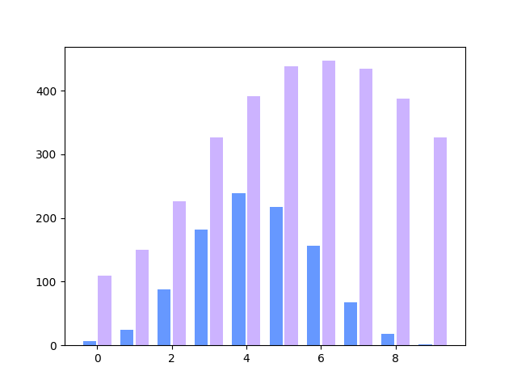
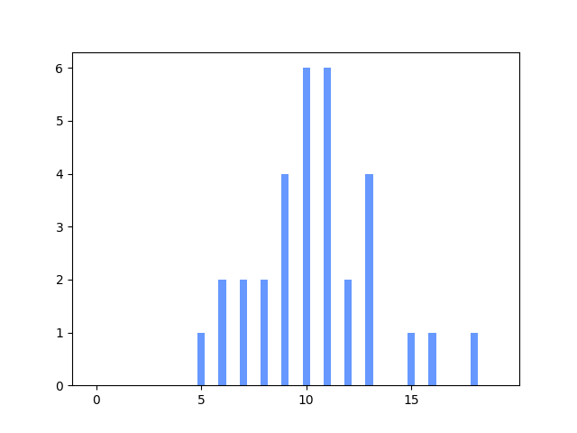
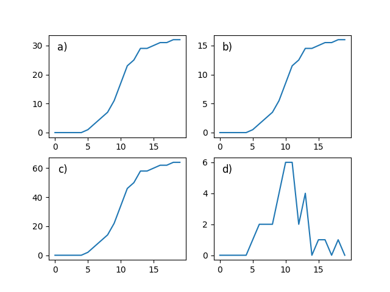

2P fagdag - Statistikkoppgaver
Du er elev 32 i klasse 2PBC4.
Definisjon
Gjør rede for følgende begrep og gi et eksempel på hver:
gjennomsnitt, kvartilbredde og typetall
Bruk av sentral- og spredningsmål
Finn median, gjennomsnitt, kvartilbredde og standardavvik for følgende verdier:
15.97 0.06 0.78 -2.94 -3.02 9.12 6.73 16.73 21.42 11.29 20.11 -15.52 5.71 16.78 9.06
Medianen er 9.06. Gjennomsnittet er 7.49. Kvartilbredden er 15.93. Standardavviket er 9.90.
Frekvenstabell
Velg en av frekvenstabellene under. Velger du den første, skal du finne median, typetall, gjennomsnitt og variasjonsbredde. Velger du den andre, skal du kun finne median og gjennomsnitt.
Alternativ 1
| Terningkast | Frekvens |
|---|---|
| 1 | 4 |
| 2 | 3 |
| 3 | 4 |
| 4 | 1 |
| 5 | 3 |
| 6 | 4 |
Gjennomsnittet er 3.42. Medianen er 3.0. Typetallet er 1. Variasjonsbredden er 5.
Alternativ 2
| Poeng | Frekvens |
|---|---|
| [0, 20> | 8 |
| [20, 40> | 10 |
| [40, 60> | 10 |
| [60, 80> | 4 |
| [80, 95> | 0 |
| [95, 100> | 2 |
Gjennomsnittet er 39.85. Medianen er 37.00. Kvartilbredden er 33.00. Standardavviket er 23.89.
Den nye læreren
På en skole jobbet det i utgangspunktet 18 realfagslærere, som da hadde en gjennomsnittsalder på 43.94 år. Det begynner så en ny lærer på skolen, og brått blir gjennomsnittsalderen 42.84 år.
Hva er aldereden til den nye læreren?
Fasiten er 23.
Diagramtolkning
Diagrammet under viser visualiseringen av to datasett. Hva kan du si om sentral- og spredningsmål for de to i forhold til hverandre?

Histogrammet
Histogrammet under viser fordelingen av svar på en "hvor mange pastiller er det i krukka"-oppgave, hvor mange deltok?

- Ut fra verdiene i histogrammet over, hva vil du tro mengden pastiller i krukka var?
Fasiten er 30.
Kumulativ match
Under vises et stolpediagram og fire foreslåtte kummulative grafer. Hvilken av de fire alternativene tilhører dataene fra stolpediagrammet?


Fasiten er a).
Foreslå visualisering
Velg to av pounktene under og illustrer dem i hvert sitt diagram. Begrunn valget av diagram.
- Karakterfordelingen i en klasse etter en prøve (rundt 30 elever)
- Karakterfordelingen for en skole etter en heldagsprøve i norsk (rundt 600 elever)
- Gjennomsnittskarakteren for årets FIFA-spill for årene 1996 til 2017.
- Aldersfordelingen for de som ser på Dagsrevyen mer enn to ganger hver uke.
Skisser
For to av punktene i forrige oppgave, skisser hvordan en slik fordeling kan se ut.
Statistisk analyse
Velg ett av de to alternativene under.
Alternativ 1 I en 2P-klasse ble det gjennomført en prøve, under vises poengene, som var fra 0 til 20.
8 13 5 12 6 11 10 13 20 11 13 5 5 16 1 15 12 18 20 13 17 3 1 6 15 18 12 20 7 9 8 6
- Regn ut gjennomsnitts- og medianpoengene til elevene.
- Tegn et diagram som illustrerer dataene
Medianpoengene er 11.50. Gjennomsnittspoengene er 10.91.
Alternativ 2 På en skole ble det gjennomført en 2P-prøve for et trinn. Poengene, som var fra 0 til 100, blei som vist under.
48 51 57 99 39 46 48 57 51 66 87 64 61 44 12 77 80 34 11 7 42 29 92 46 81 63 40 64 48 43 14 59 13 85 89 19 46 44 47 66 55 81 53 53 52 81 16 45 58 33
- Grupper dataene i en frekvenstabell hvor gruppene er [0, 20>, [20, 40>, [40, 60>, [60, 80>, [80, 95>, [95, 100].
- Finn gjennomsnittspoengene både via det grupperte materialet, og eksakt. Forklar eventuelle forskjeller på de to tallene.
- Vis dataene i et histogram.
Gruppene over viser til en typisk karakterinndeling. En av lærerne på skolen, ønsker å gjøre det litt vanskeligere å bestå,så alt under 25 poeng gir karakteren 1, men litt lettere å få karakteren 6, nå fra 90 poeng. Hvordan ville det påvirket karakterfordelingenpå trinnet?
| Poeng | Antall |
|---|---|
| [0, 20> | 7 |
| [20, 40> | 4 |
| [40, 60> | 23 |
| [60, 80> | 7 |
| [80, 95> | 8 |
| [95, 100> | 1 |
Eksakt gjennomsnitt er 51.92. Gruppert gjennomsnitt er 52.55.
Antall 1-ere etter endring er 7. Antall 6-ere etter endring er 2.